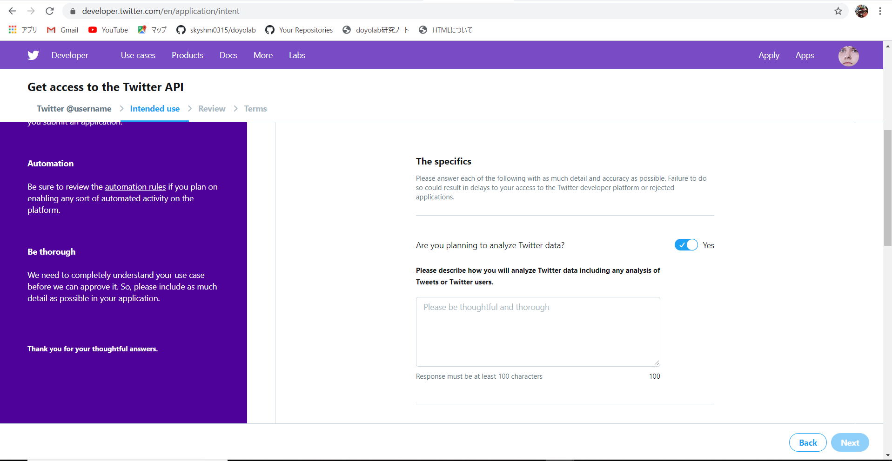

人々が感じている不満を吸い上げるためにtwitterのテキストデータからどういった傾向があるのかを
探って見たいと思います。
手順としては
１．twitterの情報を扱えるようにするためにtwitterAPI登録をする
2.pythonでプログラミングを書く。
3.分析をする。
という流れになっています。
twitterのAPI登録をするには

このような登録画面で英作文で用途を説明する必要があります。
今は承認待ちです。
少し不安な点としては、twitterの規則で、人の健康状態や財政状況を収集してはいけないと決まっており、
もしかしたらそういったものに違反するのではと思いました。